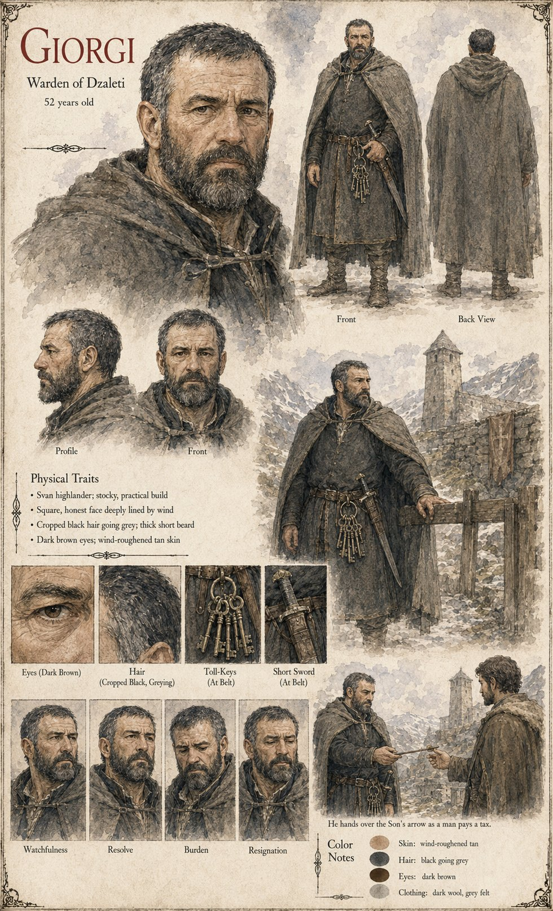

Giorgi
Warden of Dzaleti, keeper of the pass · heir to the toll · 52 on his sheet
Warden of Dzaleti, a valley of the Son whose tower stood on a spur of rock at the narrowest place on the only road from the plain into the high valleys, a squat black thing of boulders and iron; an honest, practical man who had inherited the toll along with the tower and understood both. When Orsani’s arrow is spent and the valleys begin to understand that the Concordat has stopped being a pact and become a list, Dzaleti is the first to act on it. He closes the pass to the Sword’s army on the ground that the Son’s fire was not to be made an instrument of the Father’s storm. It was a principled position. It would cost Dzaleti everything it owned.
The king answers with a fog: he draws Mesvana’s arrow, the Mother’s own, and lays a white wall along the pass for six hours, and on the parapet the sentry Gela sits down in the white silence with his spear across his knees and closes his eyes. The army of the Sword takes the tower without a blow. Giorgi surrenders the tower the same noon, in good order, and handed over the Son’s arrow in its case with the grave composure of a man discharging a tax. Dzaleti is not burned; it is audited. The toll the valley had gathered at its narrow place for four hundred years is reassigned to the Sword’s treasury by a single clerk on a single afternoon, and Giorgi is marched down to the Hall with the toll-roll folded in his sleeve, while the eleven hundred households that lived on the toll are left to eat, by the second winter, the seed they had meant to sell. Six hundred and forty people are dead of the pass, two hundred and ten of the king’s own men and four hundred and thirty of the unlucky on the road, and the king enters every one of them in his own book. The cost was entered nowhere, because nobody had been paid to see it.
The manuscript gives his valley, his inheritance, his closing of the pass, the surrender and the march. The sheet’s age of 52, stocky build, square, honest face deeply lined by wind, cropped black hair going grey, thick short beard, dark brown eyes, wind-roughened tan skin, dark wool coat and grey felt cloak, ring of toll-keys and short sword at the belt are its own, as are its panels Watchfulness, Resolve, Burden and Resignation and its detail tiles Toll-Keys and Short Sword. Its scene, He hands over the Son’s arrow as a man pays a tax., is the sheet’s own paraphrase of the manuscript’s man discharging a tax.
“the grave composure of a man discharging a tax”